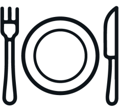

Al César
¿Por qué visitar Al César?
Una de las casas más icónicas de San José se convirtió en una concurrida cafetería, donde el chef Fernando
Andrés comparte sus tentadoras recetas.
El café nació durante la pandemia, yo siempre he puesto mis recetas en redes sociales, las mostraba, pero no
las vendía. Así que decidí hacerlo,
pero para mis amigos, como yo vivo en este edificio la idea era que compraran para llevar, jamás me imaginé
lo que venía y el éxito que tuvo, ha
sido una transición y decidimos darle un giro al negocio.
El lugar fue originalmente de la familia Gurdián Agüero, esta residencia poseía las características
eclécticas de aires victorianos, de otras
viviendas edificadas a principios del siglo XX en el barrio Amón. La historia de la hoy llamada Casa Museo
707, sin embargo, se inicia en la década
de 1960, cuando la señora Mireya Gurdián Agüero, hija de los dueños originales, decidió modificar la
fachada, introduciendo cambios sustanciales
en la casa original; su idea era, a partir de sus posibilidades, construir una obra urbana para embellecer
San José. Así, tanto en su exterior como
al interior, pueden verse detalles y acabados de diferentes épocas y estilos –desde el neo-barroco al
neomudéjar– que componen un particular y
llamativo “eclecticismo mestizado”.
Cuando abrí este negocio lo hice con el principal objetivo de ser feliz y tener todo bajo control, además de hacer las cosas bien y de forma responsable. Por eso y por respetar los aforos trabajamos con reserva los sábados y domingos, jueves y viernes no, todos los días la gente puede pedir para llevar.
¿Cuál es el horario?De viernes a sábado de 3 p.m a 7:30 p.m; domingos de 10 a.m a 4 p.m.